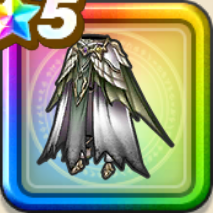

エルギオスのころも下
攻略班 9.0点 / 恐怖耐性+5%ふきとばし耐性+5%恐怖耐性+5%ふきとばし耐性+5%スキルの体技ダメージ+10%イオ属性斬撃・体技ダメージ+10%ドルマ属性斬撃・体技ダメージ+10%
くわしい特徴
【レベル別習得スキル】 Lv1恐怖耐性+5% Lv8ふきとばし耐性+5% Lv10スキルの体技ダメージ+10% Lv12イオ属性斬撃・体技ダメージ+10% Lv15ドルマ属性斬撃・体技ダメージ+10% Lv18恐怖耐性+5% Lv20守備力+5 Lv23ふきとばし耐性+5% Lv25さいだいHP+5 【限界突破スキル】 1凸攻撃力+12 2凸すばやさ+12 3凸守備力+12 4凸さいだいHP+12